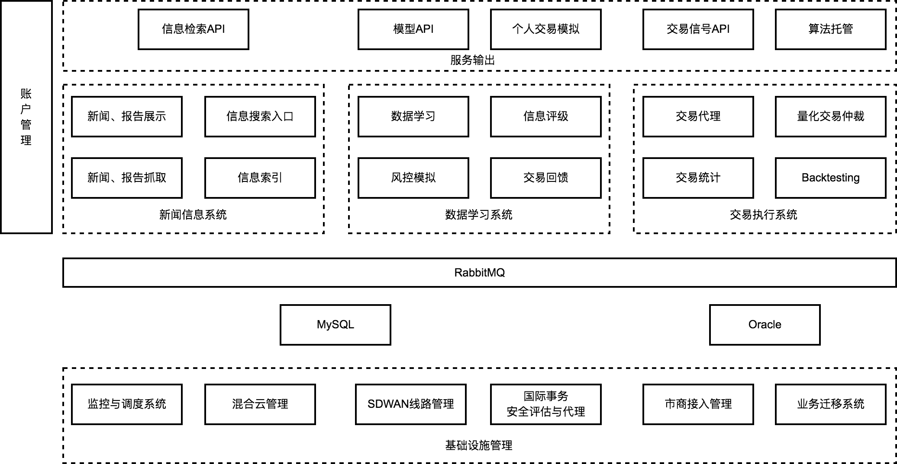

代理人模型交易笔记 - ABM在现代经济的应用暨外汇量化、新闻政史交易实践¶
这个笔记的是笔者的学习手记，内容包括统计、建模（EBM、ABM）、数据处理平台、外汇信号系统、量化交易、机器人制作等内容，较为繁杂。读者根据自己的需求酌情阅读。（意思就是你通读了这本书并不会对你产生太大影响，但是如果能改变你的一点点思想，那就是好的。)
笔者的系统理论来主要自于自控理论，建模技能偏向于ABM建模，然后是数学建模，最后的应用点，也就是本文的计算机与交易系统。
其中会牵涉到很多时下的热点，比如大数据、云计算、工业4.0、物联网等，计算机工具在量化投资中其实早已广泛使用，尤其超算、机器学习、高速网络等尖端技术。嗯，叫法而已，它们细化到产品并落地到市场上后就是个工具。当然，对这些工具的专业掌握程度决定着产品的质量，但就本文而言，知其然与所以然即可，无需深究，除非遇到瓶颈（发动机制造商只要知道选用并采购什么样的阀门、控制器等材料组件就行了，不需要每一样东西都自己生产）。
总共分为三个部分，第一个部分是基础知识，包括统计、算法、模型、工具；第二个部分是外汇实践，包括基本分析、技术分析、新闻分析、舆论分析、信号系统。
最后，判断你知识是否牢固的标准就是这个系统的盈利成长，多简单，多直接，多赤裸。当然，你赚的少有时并不是你知识真的不牢固，而是你的模型仍需优化。
这些知识可能走了很多弯路，但，游戏本身就是用来探索的，冯·诺伊曼还用无穷级数算苍蝇飞多远呢。还有就是现行的游戏理论在强劲的计算能力面前显得不那么合适，比如他们以国际象棋举例时，肯定不知道现在计算机拥有几乎全部棋谱与策略，人类就这点战胜计算机异常困难，这也可能也适用于正在流行的围棋。
与这个笔记对应的网站是https://forex.fusionworks.cn，里面有一些个人交易资料。
哦，还有个公众号，vola！
这里是主架构图。
- 第一章 数据收集、统计
- 第二章 机器学习基础
- 第三章 ABM建模基础
- 3.1 建模的种类
- 3.2 经济学JEL分类
- 3.3 建模方法
- 3.4 模型收集
- Auction
- Automata
- Bell Curves
- Collective Coorperation
- DIKW
- Entropy
- Fisher
- Large Event
- Linear
- Long tails
- Lyapunov
- Marknov
- Miller Page
- Nash Equilibrium
- Networks
- Percolation
- Polya Balancing Process
- Prisoner Dilemma
- RandomWalking
- Risk in tails
- S Concurve Convex
- Schellings
- Shapley Value
- Six Sigma
- Spatial
- Tipping Point
- Uncertainty
- Voter
- EACH
- 3.4 NetLogo模型全解
- 第四章 数据处理平台
- 第五章 外汇交易基础
- 第六章 信号交易系统
- 第七章 指导白皮书
- 关于
TODO:
合并5、7两章。
第4章要不要了？要吧，回头简化一下，注重搜索引擎与数据降维即可。
第七章以及以后的就别看了。